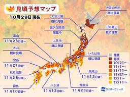

トラベルボイス
https://www.travelvoice.jp
観光産業の最新情報やトレンドを伝える、読者数No.1の専門ニュースメディア。厳選ニュースのほか、分析データや識者によるわかりやすい解説コラム記事も満載。その日のニュースをコンパクトにまとめたメールマガジンも好評。
フィード
楽天が描く「ふるさと住民」の新たな経済圏、関係人口と「旅行」「ふるさと納税」をつなぐ戦略を責任者に聞いてきた
トラベルボイス
楽天グループは、関係人口や地域の担い手を創出する取り組みを積極的に展開。2027年度から本格開始される「ふるさと住民登録制度」に向けて、パートナー企業や自治体と様々な取り組みを進めている。その戦略とは。
1日前
観光産業を「働き手に選ばれる産業」にするには？ 他産業との人材循環、成長を実感できる職場づくりを議論 ―TEJ2026シンポジウム
トラベルボイス
TEJ2026の国内観光シンポジウムをレポート。人手不足への対応や「選ばれる産業」への転換に向け、価値密度の最適化や他産業との人材循環、キャリアの出口論を議論した。
1日前
エクスペディア、AIで旅行予約の自由度を拡大、自然な言葉で宿探し、複雑な旅程や複数客室の一括予約にも対応
トラベルボイス
米エクスペディアがAI機能をアップデート。AIで一人ひとりに合った旅行を提案し、自由な言葉で宿探し、異なる都市・日程を組み合わせた予約も。
1日前
ANA、アマデウスへの不正アクセスで約3万7800人の予約情報が閲覧された可能性、パスポート番号なども
トラベルボイス
ANAは、アマデウスの旅客サービスシステムへの不正アクセスにより、顧客約3万7800人の予約情報が閲覧された形跡があると発表。うち約1700人はパスポート番号や連絡先なども対象となった。
1日前
【人事】HIS、代表取締役が澤田秀太社長の1人体制へ、矢田会長は取締役に、役員の異動など発表
トラベルボイス
HISは、2027年1月27日付で矢田素史氏が代表取締役会長を退任し、代表取締役が澤田秀太社長の1人体制となる人事を発表した。経営陣の若返りと次世代への移行を加速させる。あわせて、2026年11月1日付の執行役員人事も発表した。
1日前
HIS、旅行会社の事業承継M&Aに向けた新会社を設立へ、後継者不足や財務課題に対応、各社の独自性を維持
トラベルボイス
エイチ・アイ・エス（HIS）は、中間持株会社「旅行事業承継NEXTホールディングス」を設立すると発表した。後継者不足や財務基盤の強化など、旅行業界が抱える構造的な課題に対応。「事業承継M&Aプラットフォーム」を構築へ。
1日前
日本旅行、フランス通信社（AFP）子会社と日本の情報発信へ、インバウンド誘客や地域企業の海外展開につなぐ
トラベルボイス
日本旅行は、フランス通信社（AFP）の子会社「MEDIACONNECT」が運営するグローバルPRプラットフォーム「MediaConnect」を活用して、2027年1月を目途に日本各地の情報の発信を始める。
2日前
米会員制リゾート大手、長野・志賀高原にスキーリゾートを12月開業、同エリア2軒目、日本では21施設を展開
トラベルボイス
Travel + Leisure Co.（トラベルアンドレジャー）は、長野県志賀高原にリニューアルした「クラブウィンダム丸池 志賀高原」を2026年12月に開業。志賀高原では2軒目。
2日前

紅葉の見ごろ予想2026、11月中旬以降は平年よりやや遅め、高尾山は11月13日、京都・嵐山は23日頃に
トラベルボイス
ウェザーニューズ社は、2026年10月29日、秋の紅葉シーズンに向けた「第三回紅葉見頃予想」を発表。香嵐渓（愛知県）や嵐山（京都府）では11月23日頃に。
2日前
顧客満足度調査2026、シティホテル部門は「帝国ホテル」が首位、国内長距離交通はスカイマークが2年ぶりトップに
トラベルボイス
2026年度JCSI第4回調査で、シティホテルは帝国ホテル、ビジネスホテルはドーミーインが顧客満足度1位に。国内長距離交通はスカイマークが2年ぶりの首位、新幹線は東北・北陸が同率1位。有料特急の小田急電鉄は顧客満足、推奨意向、感動指標の3指標でトップとなった。
1日前